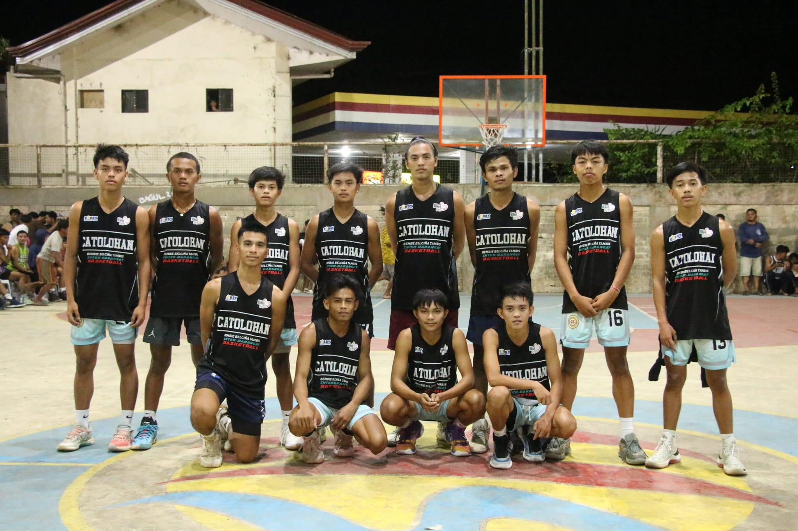
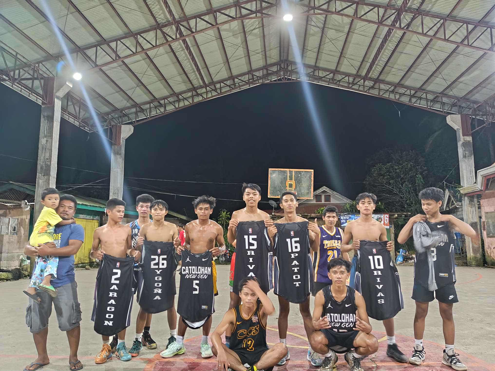

District Meet

Mayor’s Cup

Inter-Barangay 
Inter-Sitio 
I am Francis Rivas, 19 years old. I live in
Barangay Basak San Nicolas, and I graduated from Mantalongon National High School located in Dalaguete, Cebu. My strand was Humanities and Social Sciences (HUMSS).My favorite hobby is basketball. Playing basketball makes me happy and helps me release stress. I started playing when I was 11 years old as the point guard of our team. At 17, I discovered my true talent in basketball, joining tournaments across many places.